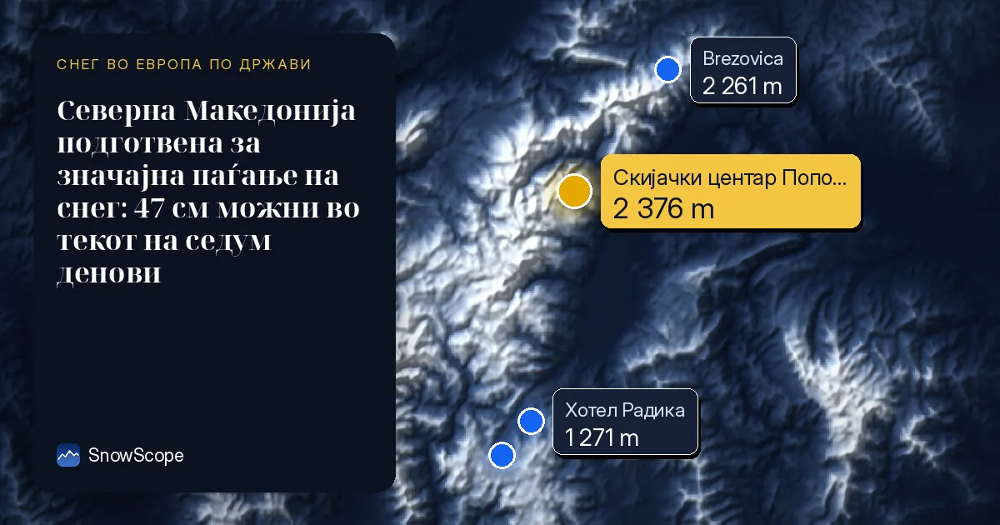

Северна Македонија подготвена за значајна паѓање на снег: 47 см можни во текот на седум денови
Северна Македонија е подготвена да проживи најголемата паѓање на снег од рано есен, со до 47 сантиметри снежен еквивалент на вода што ќе се акумулира во текот на следните седум денови. Утре, 23 ноември, ќе донесе највремелото паѓање, со приближно 17 сантиметри на највисоките врвови.
Погледнете ја прогнозата за снег за Скијачки центар Попова шапка во апликацијата SnowScopeДебелина на снегот, известувања и 3D карта, бесплатно.
Недела на акумулација напред
Прогнозата покажува драматична промена од последните недели. Во текот на следните три денови, планините на Северна Македонија ќе добијат до 21 сантиметар, концентриран главно во високите зони над 2.000 метри. Ова претставува вистински складиште вода во планинскиот снежен слој по продолжен суво период. До крајот на следната недела, кумулативните вредности би можеле да достигнат 47 сантиметри, иако точната дистрибуција зависи од патеката на бурата и висината.
Во моментов, снежното покривање останува редко низ земјата, заземајќи само 170 квадратни километри на 1 процент од мапираната површина. Снежната линија се наоѓа на 2.300 метри. Утрешната врнежина ќе почне значително да го промени ова сценарио, проширувајќи го белото покривање надолу и хранејќи го сезонскиот буџет на вода што планините го держат за зимски и пролетни отекувања.
Дополнително мониторирање на локалниот терен е препорачано за безбедност на скијачи.
| Ски-центар | Дебелина на снегот | Нов снег, 72 ч | Наредните денови | Врв |
|---|---|---|---|---|
| Скијачки центар Попова шапка | 1 cm | 4 cm | 21 cm | 2 376 m |

Утре означува критична точка
23 ноември е критичниот ден. Нашиот модел на снег указува дека ќе паѓне 17 сантиметри на единствениот датум, што го прави најснежниот ден од следната недела. Ова е прво значајно снежно време што регионот ќе го забележи оваа сезона. Планините Маврово веќе покажуваат најсилен сигнал во нашиот модел, со 16 сантиметри снег веќе измерени во текот на последните три денови, што сугерира дека атмосферскиот шематизам почнува да го фаворизира западот на овие падини.
Дури и на главната скијачка станица, Скијачки центар Попова шапка на 2.376 метри висина, условите остануваат маргинални денес со само 1 сантиметар измерен. Утрешната врнежина ќе почне да воспостави основа, иако раната сезонска снег е типично тенка и може да открие камења под неа на пониските висини.

Планински пасови: каде водата ќе се акумулира
Снегот ќе се концентрира над 2.000 метри, каде нашиот модел указува дека 35 процент покривање денес ќе се прошири значително во следниве денови. Помеѓу 1.500 и 2.000 метри, сегашно постои само 2 процент покривање, иако наминаувачката врнежина постепено ќе ја пополни оваа зона. Под 1.500 метри, земјата останува голеа; премалку е рано во сезоната за трајна снег на пониските висини во Северна Македонија.
Од хидролошка перспектива, овој недеделен настан е значајност. Секој сантиметар снежен еквивалент на вода ќе придонесе за нивоата на резервоари и подземно вода рачунајќи кога планините влегуваат во нивната акумулациона сезона. Времето, совпаѓајќи се со приближувањето на зимата, фаворизира задршување на висина.
Топли точки во земјата
Планините Маврово го доминираат сегашниот снежен шематизам, кkaj примиле 16 сантиметри во последните 72 часа и позиционирани да примат повеќе. Планините Шар следат со 7 сантиметри, а Пелистер со 6 сантиметри. Оваа рангирање ја одразува и преовладувачката ветерна шематизма и орографскиот утицај што ја насочува влагата кон запад-северозапад. Утрешната бура би требало да ги засили овие шематизми, иако сите три опсега ќе имаат корист од наминаувачкиот систем.
Скорешната нестабилност отстапува место на стабилност
Снежното покривање се флуктуира остро во текот на последната недела. Пред недела, само 80 квадратни километри носеше снег; ово се прошири на 240 квадратни километри вчера пред да паѓа на 170 денес кога раниот новембарски снег се стопи. Наминаувачкиот систем би требало да ја преврти оваа оставка и да воспостави поподржана акумулациона фаза. Трендот на графикот ја открива кревливоста на новембарскиот снег: секој топлински период активирал отстап, но утрешната врнежина би требало да заракорени трајната акумулациона фаза.
Контекст од соседите
Водечката станица на Бугарија, Банско, сегашно чува 9 сантиметри и соочува се до 25 сантиметри во следната недела—споредна но малку скромнија исход отколку прогнозата на Северна Македонија. Албанските највисоки зони, во меѓувремето, покажуваат потенцијал за 69 сантиметри, сугерирајќи дека најробусниот сигнал на овој буран систем се наоѓа кон југ. Северна Македонија окупира средната позиција: значајна акумулација е блиску, иако не на екстремните нивоа предвидени за албанските високи врвови.
Совети за скијачи
- Следете ги официјалните булетини за лавини пред да ја напуштите списаната пак над 2.000 метри за време и веднаш по утрешната врнежина. Раната сезонска снежна настани може брзо да дестабилизираат кога свежите слојеви ќе се депонираат на голо земјиште.
- Очекувајте брзо отекување на вода од оваа недеделна паѓање. Потоци и мали реки ќе се подигнат кога снегот ќе се стопи од пониските висини, особено на јужно-обливите падини каде сончевата приобретка остануе значајна во конецот на ноември.
- Користете SnowScope за да следите кога снежната линија ќе се спушти во вашиот преферираниот скијачки пас во текот на следниве денови. Највисоките зони ќе се стабилизираат прво; пониските висини ќе видат привремено покривање.
- Запомнете дека 1 сантиметар снежна длабочина типично претставува само 0.1 сантиметар водоен еквивалент кога е свежа и студена. Овој недеделен настан, кој доставува десетина сантиметри, ќе претставува значајно складиште на вода во планинскиот систем.
- Ако планирате да скијате над 2.300 метри, подгответе се за мешани услови: голо камење во експонираните области, вистински снег само каде ветрување го концентрира, и потенцијалот за ледени слојеви под свежо прашина каде согревање се случи на јужните аспекти.
About these numbers
Resort snow depths are the deepest snow on the resort's upper slopes on the date shown; they are estimates for an area, not a measurement at one point. Forecasts can change. Always read the official avalanche bulletin before going off-piste.
Cite this report
For research, teaching or the press: the numbers and charts are free to reuse under CC BY 4.0 with this citation.
SnowScope (2026), Северна Македонија подготвена за значајна паѓање на снег: 47 см можни во текот на седум денови, https://snowscope.app/blog/mk/2026/11/north-macedonia-snow-on-the-way-22-november-2026.html, accessed 2026-11-22
SnowScope (Atlas Labs). (2026, November 22). Северна Македонија подготвена за значајна паѓање на снег: 47 см можни во текот на седум денови. SnowScope snow reports. https://snowscope.app/blog/mk/2026/11/north-macedonia-snow-on-the-way-22-november-2026.html
BibTeX
@misc{snowscope2026northmacedoniasnowonthew,
author = {{SnowScope (Atlas Labs)}},
title = {Северна Македонија подготвена за значајна паѓање на снег: 47 см можни во текот на седум денови},
year = {2026},
month = nov,
howpublished = {\url{https://snowscope.app/blog/mk/2026/11/north-macedonia-snow-on-the-way-22-november-2026.html}},
note = {Published 2026-11-22 20:05 UTC; accessed 2026-11-22}
}· CC BY 4.0 · Methods, data and tools →
Скијачки центар Попова шапка: snow and temperature by height, this winter vs last (tools) →
Follow Скијачки центар Попова шапка
Бесплатно: порака кога доаѓа нов снег и прогнозата секое утро.